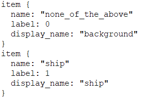

Nothing is given, Everything is earned.
— Lebron James
Take it easy, babe …

SSD: Single Shot MultiBox Detector
从 Github 上面下载源工程代码：caffe-SSD
进入caffe-ssd 主目录：cp /home/xxx/…/caffe-ssd/
1 | cp Makefile.config.example Makefile.config |
编译项目：（进入 caffe-ssd 主目录）
1 | make -j8 |
CUDA 版本比较高的需要注释掉config里面最后一行内容：

数据文件准备
预训练模型（VGG）：VGG_ILSVRC_16_layers_fc_reduced.caffemodel
（下载地址：密码: t9ub）
下载完毕后将VGG模型放到caffe主目录下 models\VGGNet 下面(如果没有的话，models 下面没有的话mkdir VGGNet)
VOC2007 和 VOC2012 数据集
进入caffe主目录下的data目录：
1 | wget http://host.robots.ox.ac.uk/pascal/VOC/voc2012/VOCtrainval_11-May-2012.tar |
如果安装失败，请转到：（VOC 2007 & 2012 Dataset 密码：j3in ）
紧接着解压：
1 | tar -xvf VOCtrainval_11-May-2012.tar |
将数据转换为caffe处理的数据类型（LMDB）：
cd caffe主目录，执行：
1 | ./data/VOC0712/create_list.sh |
注意在执行 create_data.sh 如果提示no module caffe 的话，用如下指令：export PYTHONPATH=$PYTHONPATH:/home/xxx/.../caffe主目录/python（自行修改中间路径）
python examples/ssd/ssd_pascal.py1 | python examples/ssd/score_ssd_pascal.py |
这里注意指定使用的快照模型的路径 & 在caffe主目录下面运行程序
训练准备
创建自己的数据目录myData:
1 | cd /data |
将/data/VOC0712下面的create_list.sh,create_data.sh,labelmap_voc.protoxt这三个文件拷贝到’data/myData’:
1 | cp data/create* ./myData |
在/data/VOCdevkit目录按照VOC数据框架下面创建myData,用来存放自己的数据集
1 | cd data/VOCdevikit |
一般地，我们只需要关注 ：
Annotations：XML描述文件
ImageSets: Main目录下面放 train.txt, val.txt, trainval.txt, test.txt
JPEGImages:存放所有图片
制作VOC数据集
按照VOC Dataset要求整理好数据集后，将之转换为caffe的输入数据。首先，根据自己数据集特点，修改labelmap_voc.protxt,注意保留item中background类，其余的类别可以按照自己的需要照葫芦画瓢，给一个简单的示例：

然后，依次运行create_list.sh,create_data.sh.注意修改sh中的路径到你自定义的数据集路径。
需要注意的参数有：
create_data.sh: data_root_dir, data_name,mapfile
create_list.sh: root_dir,
1 | # create_list.sh 中应该注释掉 |
训练
在python主目录下运行命令：python examples/ssd/ssd_pascal.py
1 | #需要指定的路径与参数 |
Note: solver parameters中GPU的指定,个数不要超过可用个数，可以用nvidia-smi来查看可用GPU情况;另外，也可以调整solver_param参数，比如：iter_size, max_iter, etc.
score_pascal.py
Note: 注意修改参数与ssd_pascal.py中的路径相同
ssd_detect.py**
Note: 检测单张图片，指定‘–gpu_id’, ‘–model_def’, ‘–model_weights’, ‘–image_file’.
批量完成test images的可视化
build/examples/ssd/ssd_detect.bin对test结果进行文本输出，输出的格式为 ( path,label,confidence,xmin,ymin,xmax,ymax )caffe root 下执行：
1 | build/examples/ssd/ssd_detect.bin models/VGGNet/mydataset/SSD_300x300/deploy.prototxt models/VGGNet/mydataset/SSD_300x300/mydataset_SSD_300x300_iter_100236.caffemodel data/VOCdevkit/mydataset/test_img_path.txt --confidence_threshold 0.5 --out_file output.txt` |
output.txt 是 ssd_detect.bin 生成的检测结果的txt文档
1 | python examples/ssd/plot_detections.py output.txt /home/wxb/caffe-ssd --labelmap-file data/mydataset/labelmap_voc.prototxt --save-dir results/bbox_results/SSD_300x300/Main/img/ |
you can check the results of following code here1
2
3
4
5
6
7
8
9
10
11
12
13
14
15
16
17
18
19
20
21
22
23
24
25
26
27
28
29
30
31
32
33
34
35
36
37
38
39
40
41
42
43
44
45
46
47
48
49
50
51
52
53
54
55
56
57
58
59
60
61
62
63
64
65
66
67
68
69
70
71
72
73
74
75
76
77
78
79
80
81
82
83
84
85
86
87
88
89
90
91
92
93
94
95
96
97
98
99
100
101
102
103
104
105
106
107
108
109
110
111
112
113
114
115
116
117
118
119
120
121
122
123
124
125
126
127
128
129
130
131
132
133
134
135
136
137
138
139
140
141
142
143
144
145
146
147
148
149
150
151
152
153
154
155
156
157
158
159
160
161
162
163
164
165
166
167
168
169
170
171
172
173
174
175
176
177
178
179
180
181
182
183
184
185
186
187
188
189
190
191
192
193
194
195
196
197
198
199
200
201
202
203
204
205
206
207
208
209
210
211
212
213
214
215
216
217
218
219
220
221
222
223
224
225
226
227
228
229
230
231
232
233
234
235
236
237
238
239
240
241
242
243
244
245
246
247
248<!DOCTYPE HTML>
<html>
<head>
<meta name="Xingbo WANG"
content="andywangxb.github.io">
<meta http-quiv="Content-Type" content="text/html"; charset=gb2312" />
<meta http-equiv="Refresh" content="5;url=https://andywangxb.github.io" />
<!-- title of web -->
<title>html experiments</title>
<!-- style of web -->
<style type="text/css">
h1 {color: green}
p {color: black}
span.red {color:red;}
#header {
background-color:black;
color:white;
text-align:center;
padding:5px;
}
#nav{
line-height:30px;
background-color:#eeeeee;
height:300px;
width:100px;
float:left;
padding:5px;
}
#section{
width:350px;
float:left;
padding:10px;
}
#footer{
background-color:black;
color:white;
clear:both;
text-align:center;
padding:5px;
}
</style>
<!-- outer style -->
<link rel ="stylesheet" type="text/css" href="/html/csstest1.css">
</head>
<!-- visible part -->
<body bgcolor="lightgrey">
<!-- this is experiment -->
<!-- heading-->
<h1 align="center">h1 heading</h1>
<h2 style="background-color:red">h2 heading</h2>
<h3 style="text-align:right">h3 heading</h3>
<h4>h4 heading</h4>
<h5>h5 heading</h5>
<h6>h6 heading</h6>
<!-- paragraph -->
<p>one paragraph</p>
<p>another paragraph</p>
<hr /><!-- split -->
<!-- link -->
<a href="https://andywangxb.github.io"> my personal homepage</a>
<p>
<a href ="/index.html">This </a >is directed to a link of this website.</p>
<p>
<a href ="http://www.qq.com">This </a>is directed to a link outside this website</p>
<a href ="http://www.qq.com" target="_blank">This</a> will open a new page directed to <i>qq.com</i>
<p> you can mail me at<a href ="mailto: wangxbzb@hotmail?subject=Hello%20again">subject: hello again</a>
</p>
<hr />
<!-- insert image -->
<map>
<p>Image
<img src="/images/photo.png" align="center" alt="photo.png" width="100" height="100"/>
among the texts</p>
</map>
<hr />
<!-- word style -->
<b> this text is bold </b>
<br />
<strong> this text is strong </strong>
<br />
<big> this text is big</big>
<br />
<em> this text is emphasized</em>
<br />
<i> this text is italic</i>
<br/>
<small>this text is small</small>
this text contains <sub>subscript</sub>
<br />
this text contains <sup>superscript</sup>
<hr />
<pre>
This is pre tag.
it can be used to demonstarte codes:
for i in range(0,10):
print(i)
</pre>
<code> Computer Code </code>
<br />
<kbd>keyboard input</kbd>
<br />
<tt>teletype text</tt>
<br />
<samp>sample text</samp>
<br />
<var>computer variable</var>
<br />
<hr />
<address>
written by <a href ="wangxbzb@hotmail.com">Xingbo WANG</a>.<br>
Visit us at:<br>
andywangxb.github.io<br>
Wuhan, China<br>
</address>
<hr />
<abbr title="etcetera">etc.</abbr>
<br />
<acronym title="world wide web">www</acronym>
<hr />
<bdo dir="rtl">
here is some Hebrew text
</bdo>
<hr />
<blockquote>
this is for long quotes.this is for long quotes.this is for long quotes.
</blockquote>
<br />
<q>this is for short quotes</q>
<br />
For example:
<q> this is an example from WWF website</q>
<blockquote cite="https://www.worldwildlife.org/who/index.html">
五十年来，WWF 一直致力于保护自然界的未来。世界领先的环保组织，WWF 工作于 100 个国家，并得到美国一百二十万会员及全球近五百万会员的支持。
</blockquote>
<hr />
<p> a "dozen" is not<del> twenty </del> <ins> twelve </ins>
</p>
<hr />
<p><cite>The Scream</cite> by Edward Munch. Painted in 1893.</p>
<hr />
<!-- table -->
<p><h4 align="center">table example</h4>
<table border="1">
<caption>name</caption>
<tr>
<th>heading A</th>
<th>heading B</th>
</tr>
<tr>
<td> row 1 , cell 1 </td>
<td> row 1 , cell 2 </td>
</tr>
<tr>
<td> row 2 , cell 1 </td>
<td> row 2 , cell 2 </td>
</tr>
</table>
</p>
<hr />
<p>unorganized list
<ul>
<li>coffe</li>
<ul>
<li>black coffe</li>
<li>latte</li>
</ul>
<li>milk</li>
</ul>
</p>
<p>organized list
<ol>
<li>coffe</li>
<li>milk</li>
</ol>
</p>
<p>DIY table
<dl>
<dt>computer</dt>
<dd>device</dd>
<dt>monitor</dt>
<dd>device</dd>
</dl>
</p>
<hr />
<!-- span -->
<p><h1>My <span class="red">Important</span> Heading</h1>
</p>
<hr />
<!-- div style -->
<div id="header">
<h1>city gallery</h1>
</div>
<div id="nav">
London<br>
Paris<br>
Tokyo<br>
</div>
<div id="section">
<h1>London</h1>
<p>London is the capital city of England.
</p>
</div>
<div id="footer">
CopyRight
</div>
<hr />
<!-- frame -->
<iframe <!--src="http://www.qq.com"--> name="tencent" width="100%" height="200" frameborder="0"></iframe>
<p>
<a href="http://www.baidu.com" target="tencent">baidu.com</a>
</p>
<hr />
<!-- insert script-->
<script type="text/javascript">
document.write("hello world!")
</script>
<hr />
<!-- special symbols -->
<p>
  space<q> </q><br>
5 < 10<br>
5 & 10<br>
£ 5<br>
¥ 10<br>
¢ 10<br>
®<br>
&trade<br>
5 × 10<br>
10 ÷ 5<br>
<br>
</p>
<hr />
<!-- form -->
<form>
First name:<br>
<input type="text" name="firstname">
<br>
Last name:<br>
<input type="text" name="lastname">
<br>
<input type="radio" name="sex" value="male" checked>Male
<br>
<input type="radio" name="sex" value="female">Female
<br>
</form>
<hr />
</body>
</html>
Anaconda is very convenient tool to manage multiple virtual envs of python in your PC.
So you can enjoy different version of python, avoid conflictions between different projects.
This blog I will introduce how to install anaconda & install envs for tensorflow(CPU)、Scrapy
common commands:
1 | # check current env |
1 | # install new pkgs |
In order to install and upgrade easily in China. We should specifically allocate domestic mirrors to it.
.condarcin C:\Users\user_name\.condarc- default1 | conda config --add channels https://mirrors.tuna.tsinghua.edu.cn/anaconda/cloud/msys2/ |
To ensure that pkgs you use does not interfere with each other. Better to create new envs for them.
1 | conda create -n tensorflow python=3.5 |
1 | conda create -n py27 python=2.7 |
Wait a moment & have a cup of tea~
username.github.ioEnv: Ubuntu 16.04
Methods:
sudo apt-get install gitNodeJs: NodeJs+NPM
1 | sudo npm install -g -n |
Hexo: sudo npm install hexo-cli -g
hexo init username.github.ioconfiguration
cd username.github.iogit clone https://github.com/iissnan/hexo-theme-next themes/next_config.yml1 | title: [blog name] |
wirtehexo new [layout] "essay name"
hexo snpm install hexo-deployer-git --savehexo cleanhexo gexo dHexo: https://hexo.io/
NexT: http://theme-next.iissnan.com/
Individual Settings: 1, 2
相信大家在生活中也看过下面这样的图形吧？想必对于词云图也不是很陌生吧？词云图，顾名思义，就是一些具有关键意义的词，组成一些具有代表意义的形状，并按照重要程度、出现频率等进行排列组合得到一张精炼浓缩的信息图。是不是感觉十分高大上？其实，我们自己也可以做属于我们自己的词云图。

巧妇难为无米之炊，我们需要准备一下材料去烹饪我们这道视觉盛宴：
这一章里面，我主要介绍的是如何把QQ聊天记录导出，并把整理成关键词，为后续可视化做准备的。
导出聊天记录
首先找到qq的消息管理器（小喇叭）,然后找到你想要得到的聊天记录的那位，右键，导出消息记录就可以了。【注意】选择下拉菜单，将聊天记录导出为(* .txt)格式或者是(* .mht)格式。
处理文本
在得到文本素材以后，我们需要将这些文本进行分割，得到一个个词语，经过过滤得到关键词。这里，我们选用的是 jieba 结巴中文分词。
jieba 中文分词的 Github 项目地址：https://github.com/fxsjy/jieba
pip 安装jieba：pip install jieba通过 jieba 处理文本：
1 | import jieba |
清洗聊天记录
这里主要利用re 模块进行清洗，大家可以根据自己的聊天记录形式进行自定义的处理。
re 模块介绍：http://www.runoob.com/python/python-reg-expressions.html
1 | import re |
分词
1 | # 将特定的词加入词典 |
提取关键词
光得到分词结果我们还不能很好地展现文本内容，这一步，我们需要分词后的统计，提取关键词。为后面可视化做准备。
1 | # 提取关键词 |
保存最终关键词和结果
1 | with open("keywords.txt",'w',encoding='UTF-8') as f: |
保存最终关键词和结果

到此，介绍完了文本准备的相关工作。后面会继续介绍如何制作词云。
主料：文本（QQ聊天记录）
辅料：WordArt，jieba（python包）
安装并使用 jieba 流程，具体参考前一篇博客
【传送门】：http://www.jianshu.com/p/dee4ff08df2a
pip install jieba 进行安装；jieba.cut() 进行分词1 | import jieba |
介绍制作词云的两种方法：
WordArt 是一款十分好用的在线制作词云的软件。但是，需要付费得到更高清的结果。对于我们普通用户，在网站上申请自己的账号，做几张图娱乐一下就行了。没必要花很多钱去买会员。
下面是国外的网友的一些作品：![WordArt Trending - 《Rainbow Stitch》[1]](http://upload-images.jianshu.io/upload_images/10426271-cc827201adacd26e.png?imageMogr2/auto-orient/strip%7CimageView2/2/w/1240)
![WordArt Trending - 《Emojiiiiiiiiiiiiiiiii...》[2]](http://upload-images.jianshu.io/upload_images/10426271-c18ff0b7b905eef5.png?imageMogr2/auto-orient/strip%7CimageView2/2/w/1240)
![WordArt Trending -《Mickey Mouse》[3]](http://upload-images.jianshu.io/upload_images/10426271-c45b1359ead1bdec.png?imageMogr2/auto-orient/strip%7CimageView2/2/w/1240)
[1] https://wordart.com/qhlv4vxrevtz/rainbow-stitch
[2] https://wordart.com/sajylyvwjx6u/emojiiiiiiiiiiiiiiiiiiiiiiiiiiiiiiiiiiiiiiiiiiiiiiiiiiiiiiiiiiiiiiiiiiiiiiii
[3] https://wordart.com/s3zwaue4bw0s/mickey-mouse
想要制作自己的词云图，首先要准备好自己的文本材料（在这里，我以qq聊天记录为例子进行演示）：有关 qq聊天记录的提取和分词,请翻看前篇BLOG(传送门)
注册登录账户，创建(CREATE NOW)自己的项目以后，WordA如图选项栏分为：文本、形状、字体、布局以及风格。


前面介绍了文本材料的准备 以及 WordArt 可视化。这里我介绍如何自己动手DIY属于自己的词云。
1 | pip install jieba |
wordcloud用于生成词云，Github地址：https://github.com/amueller/word_cloud
wordcloud生成需要词语作为元素，由于wordcloud是国外的，对中文支持不好，所以我们需要提前对文本进行分词统计处理，得到关键词进行可视化。
方式一：
直接将分词结果放入wordcloud.generate()函数中进行处理（wrd_dict是分词的结果）
1 | import matplotlib.pyplot as plt |
方式二：
generate()函数，但是这样得到的结果却不是很理想，最终 wordcloud 整理出来的结果将人名和一些人所说的话并在一起，导致“小王 哈哈哈”，“小王”都被分进词云的词典，导致“小王”这个词重复出现。WordCloud这个类（对象），找到generate_from_frequencies(wrd_dict)这个函数，送入的是自定义的字典{[对象]：[频率]}1 | # 制作词典 |
math.log() 是调整聊天记录中出现频率过度频繁的人的名字的权重，使得样 本权重比较平衡。
1 | public class HelloWorld #如果有 public 类的话，类名必须和文件同名，注意大小写 |
1 | #include <stdio.h> |
1 | #include <iostream> //std::cout 要用到的头文件 |
1 | >>> print "I love you!" #Python 2.x |
1 | using System; |
1 | var sys = require ("sys"); |
1 | print("I love you!") |
1 | <!DOCTYPE HTML> |
1 | Module Hello |
1 | > echo "I love you!" |